Guide
교회 안내
필요한 항목을 눌러 펼쳐 보세요.
Guide
필요한 항목을 눌러 펼쳐 보세요.
교회 안내 — 예배
예배를 고르고, 지역을 고르면 정류장별 시간이 나옵니다.
정해진 시간보다 조금 일찍 나와 기다려 주세요. 약속된 시간에서 1분 이상은 기다리기 어렵습니다. 시간표는 교회 사정에 따라 바뀔 수 있습니다. 차량 운행 문의 02-6413-4950
← 교회 안내교회 안내 — 교회 소개
예수 그리스도의 복음 앞에 역전의 은혜를 경험하는 인생이 있습니다.
믿음의 행함으로 이 땅에 하나님 나라를 세워가는 인생
소망을 기대하며 고귀한 가치에 도전하는 인생
사랑의 나눔 있는 곳에서 세상의 소금과 빛이 되는 인생
말씀의 능력으로 회복의 은혜를 경험하는 예배
기도의 연합이 기적을 상식으로 바꾸는 예배
찬양의 영감으로 하나님께 온전히 영광 올리는 예배
행복의 시작 예수 그리스도를 만나며
하나님의 꿈을 꾸는 오륜교회로 오십시오.
당신이 바로 그 간증의 주인공입니다!
설립목사 김은호
TV
인터넷
라디오
교회 안내 — 교회 소개
로고타입 LOGOTYPE
기본형
영문혼합형 영문은 독자적으로 쓰지 않으며 필요에 따라 한글과 조합하여
쓰는 것을 원칙으로 한다.
시그니처 SIGNATURE
가로조합형
영문조합형
색상 COLOR
교회 안내 — 예배
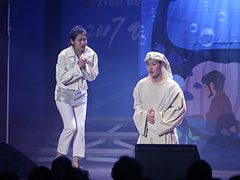
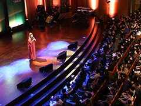
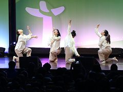
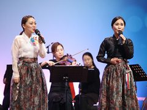
성경은 "누구든지 오라" 하십니다. 예배는 너무도 당연히 열려있어야 합니다. 교회는 끊임없는 "문턱 낮추기"를 통해 시대적 다양성과 사람들의 다양함을 수용할 수 있어야 합니다. 오륜교회는 복음의 다양한 표현들을 통하여 성령님의 임재가 충만한 현대적인 문화 예배를 드립니다.
오륜교회는 예배 갱신을 통해서 성장한 교회입니다.
김은호 목사는 미국에 성장하는 교회를 방문하여 예배 갱신에 대한 도전을 받고 1994년 8월에 예배갱신을 시작하게 되었습니다. 교회 설립 20주년을 맞이하여 오륜교회에 등록하게 된 이유에 대하여 설문조사를 한 적이 있습니다. 설문에 응한 4,596명(6417개 의견)의 성도들 가운데 설교가 가장 은혜스러워서, 예배가 좋아서 등록했다는 성도들이 무려 82%나 되었습니다. 이것을 보면 우리 오륜교회는 예배를 통하여 성장하고 있는 교회입니다.
진리는 변함이 없지만 진리를 담는 그릇은 시대마다 새로워져야 합니다. 오륜교회는 다양한 장르(스킷드라마, 영상매체, 워십 등)를 통하여 교회의 문턱을 낮추고 하나님의 임재를 추구하는 현대적인 문화예배를 드립니다.
예배는 구원받은 자들의 축제입니다.
예배는 형식이나 습관이 아닙니다. 예배는 구원받은 자들의 축제입니다. 그러므로 예배는 자유함과 기쁨이 있어야 합니다.
예배의 본질은 드림입니다.
많은 사람들이 예배를 보는 것으로 생각합니다. 그러나 예배는 보는 것이 아닙니다. 또 단순히 십자가와 부활을 묵상하고 기념하는 것도 아닙니다. 그러므로 은혜의 보좌 앞에 나아와 내 마음과 시간과 물질과 인격을 드려야 합니다.
예배는 주님과의 만남입니다.
예배는 하늘 보좌에 앉으신 하나님 아버지와 나를 위해 죽으시고 부활하신 주님, 그리고 보혜사 성령님을 인격적으로 만나는 시간입니다. 그러므로 예배에는 반드시 하나님의 임재가 있어야 합니다.
교회 안내 — 오시는 길 · 연락처
| 부서 | 내선 | 팩스 |
|---|---|---|
| 행정 | 02-6413-4811 | 02-485-3585 |
| 선교 | 02-6413-4809 | |
| 재정 | 02-6413-4812 | 02-485-3585 |
| 웨딩 | 02-6413-4814 | 02-485-3585 |
| 장소 | 02-6413-4813 | 02-485-3585 |
| 총무 | 02-6413-4815 | 02-485-3585 |
| 방송실 | 02-6413-4930~2 | |
| 스튜디오 | 02-6413-5324 | |
| 출판팀 | 02-6413-5731 |
| 부서 | 내선 | 팩스 |
|---|---|---|
| 차량팀 | 02-6413-4950 | |
| 도서관 | 02-6413-4947 | |
| 오륜서점 | 02-6413-4949 | |
| 본관 경비실 | 02-6413-4817 | |
| 교육관 경비실 | 02-6413-5322 | |
| 방재실 | 02-6413-5323 | |
| 분실물 | 02-6413-4814 | |
| 협력기업담당 | 02-6413-4813 |
| 부서 | 담당 | 내선 |
|---|---|---|
| 방이교구 | 정은희 교구간사 | 02-6413-4869 |
| 조형래 목사 | 02-6413-4819 | |
| 송파교구 | 조광민 교구간사 | 02-6413-4862 |
| 임지훈 목사 | 02-6413- 02-6413- | |
| 잠실교구 | 방성율 목사 | 02-6413-4833 |
| 용수민 교구간사 | 02-6413-4863 | |
| 강남교구 | 장미선 교구간사 | 02-6413-4864 |
| 송영광 목사 | 02-6413-4834 | |
| 파크리오교구 | 정광식 목사 | 02-6413-4824 |
| 조인득 교구간사 | 02-6413-4865 | |
| 강동1교구 | 이병민 목사 | 02-6413-4835 |
| 백주희 교구간사 | 02-6413-4854 | |
| 강동2교구 | 강정화 교구간사 | 02-6413-4855 |
| 최민흥 목사 | 02-6413-4825 | |
| 강동3교구 | 석선미 교구간사 | 02-6413-4852 |
| 송정용 목사 | 02-6413-4822 | |
| 포레온교구 | 조인 목사 | 02-6413-4907 |
| 손연주 교구간사 | 02-6413-4937 | |
| 하남교구 | 김은주 교구간사 | 02-6413-4866 |
| 송성국 목사 | 02-6413-4867 |
| 부서 | 담당 | 내선 |
|---|---|---|
| 경기북교구 | 김창석 목사 | 02-6413-4911 |
| 한규숙 교구간사 | 02-6413-4912 | |
| 올림픽교구 | 장원석 목사 | 02-6413-4828 |
| 김민경 교구간사 | 02-6413-4858 | |
| 오금교구 | 박봉연 교구간사 | 02-6413-4860 |
| 이성민 목사 | 02-6413-4832 | |
| 가락교구 | 양명환 목사 | 02-6413-4829 |
| 구미향 교구간사 | 02-6413-4899 | |
| 거여마천위례교구 | 이승혜 교구간사 | 02-6413-4868 |
| 노승완 목사 | 02-6413-4818 | |
| 경기남교구 | 정태훈 목사 | 02-6413-4831 |
| 강여정 교구간사 | 02-6413- 02-6413- | |
| 성내1교구 | 김태선 교구간사 | 02-6413-4850 |
| 정현욱 목사 | 02-6413-4820 | |
| 성내2교구 | 김미정 교구간사 | 02-6413-4851 |
| 문종현 목사 | 02-6413-4821 | |
| 풍납교구 | 정세라 교구간사 | 02-6413-4893 |
| 배요한 목사 | 02-6413-4823 | |
| 광진교구 | 김광희 교구간사 | 02-6413-4856 |
| 김보광 목사 | 02-6413-4826 | |
| 강북교구 | 정미숙 교구간사 | 02-6413-4857 |
| 김득수 목사 | 02-6413-4827 |
| 부서 | 담당 | 내선 |
|---|---|---|
| 영아부 | 송시언 목사 | 4870 4870 |
| 유아부 | 이아현 전도사 | 4881 4881 |
| 유치부 | 최상문 목사 | 4872 4872 |
| 초등1학년부 | 김용주 목사 | 4876 4876 |
| 초등3학년부 | 정형근 목사 | 4874 4874 |
| 초등4학년부 | 하은준 목사 | 8772 8772 |
| 초등5학년부 | 이성현 목사 | 4877 4877 |
| 초등6학년부 | 임예훈 목사 | 4878 4878 |
| 8시중고등부 | 조동혁 전도사 | |
| 중등1학년부 | 변상선 목사 | 4886 4886 |
| 중등2ㆍ3학년부 | 김성현 목사 | 4880 4880 |
| 고등부 | 최병주 목사 | 1765 1765 |
| 사랑부 | 김미영 전도사 | 4879 4879 |
| 청년1부 | 주현우 목사 | 4839 4839 |
| 청년2부 | 김민섭 목사 | 4837 4837 |
| 청년3부 | 이탁열 목사 | 4838 4838 |
| 부서 | 담당 | 내선 |
|---|---|---|
| 청년4부 | 이준건 목사 | 4839 4839 |
| 청년5부 | 정직한 목사 | 4844 4844 |
| 청년6부 | 장명근 목사 | 4841 4841 |
| 청년7부 | 이갈렙 목사 | 4843 4843 |
| 청년8부 | 유성식 목사 | 4838 4838 |
| 청년9부 | 장두희 목사 | 4836 4836 |
| 청년10부 | 김장현 목사 | 4845 4845 |
| 청년11부 | 최주영 목사 | 4847 4847 |
| 그레이스공동체 | 김영채 목사 | 4803 4803 |
| 신혼부부공동체 | 장권오 전도사 | |
| 수험부 공동체 | 최규민 전도사 | |
| 프레전스 | 우미쉘 목사 | |
| 블레싱워십 | 김영글 목사 | 4804 4804 |
| 램넌트워십 | 우미쉘 목사 | |
| 헤세드 | 유성식 목사 | 4838 4838 |
| 브릿지워십 | 임예훈 목사 | 4878 4878 |
| 부서 | 전화/내선 | 팩스 |
|---|---|---|
| 꿈미법인 | 02-470-3252 | 02-470-1397 |
| 꿈미학교 | 02-484-5301~2 | 02-484-5307 |
| 다니엘기도회운영위원회 | 02-6413-4922~4 | |
| (사)프렌즈 | 02-483-5007 | 02-6007-9857 |
| 아이도스(IDOS) | 02-6329-2000 | 02-485-3692 |
| 토비아스 | 02-6413-4913~4 | |
| 다문화한가족센터 | 02-6413-4955 | |
| 오륜비전빌리지 | 031-582-5111 | 031-582-8113 |
| 부서 | 전화/내선 | 팩스 |
|---|---|---|
| 마라나타 하늘정원 | 031-582-6901 | 031-582-5112 |
| 사랑의헌금 운영위원회 | 02-6413-5324 | |
| DNA 미니스트리 | 02-6413-4917 | |
| 분당오륜교회 | 070-8806-0191 | |
| 송탄오륜교회 | 031-665-0675 | |
| 서울아산병원교회 | 02-3010-7877 | |
| 영훈오륜교회 | 02-945-5251 |
교회 안내 — 장소 안내
서울 강동구 강동대로 235
| 층 | 공간 |
|---|---|
| 10F | 체육관 |
| 9F | 목양국 · 회의실 · 교구목사실 · 상담실 |
| 8F | D.N.A Ministry · 청년국교역자실 · 교구간사실 · 토비아스 · 사랑의헌금 |
| 7F | 벧엘홀 · 방송실 · 출판홍보팀 |
| 6F | 도서관 · 토비아스커피(로뎀점) · 의료선교팀 · 비전 소그룹실 1, 2 |
| 5F | 에덴홀 · 브니엘홀 · 제자훈련실 · 토들러랜드 |
| 4F | 비전홀(대예배당) · 자모실 · 방송실 · 통역실 |
| 3F | 비전홀(대예배당) · 에벤에셀홀 · 개인기도실 · 상담실 · 아론과홀 |
| 2F | 비전홀(대예배당) · 수유실 · 안내데스크(새가족환영실) |
| 1F | 그레이스홀(웨딩홀) · 사무국 · 오륜서점 · 토비아스커피(라운지점) |
| B1 | 식당 · 헤브론홀 · 방재실 |
| B2 | 주차장 |
| B3 | 주차장 |
| B4 | 주차장 |
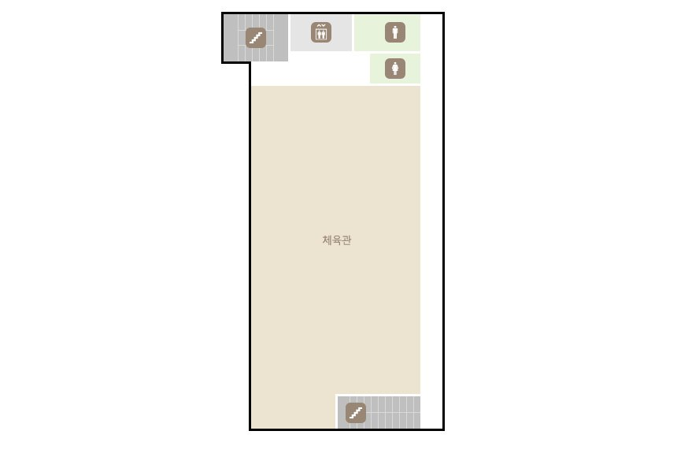
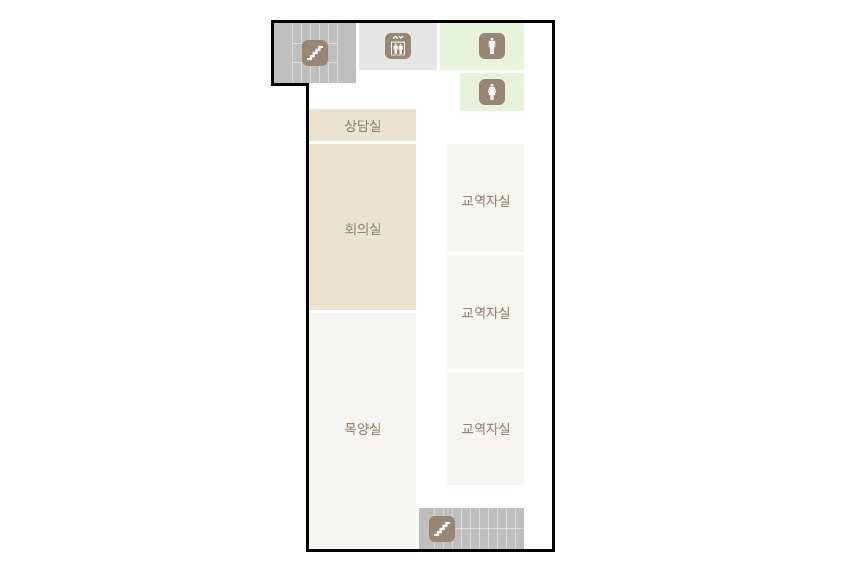
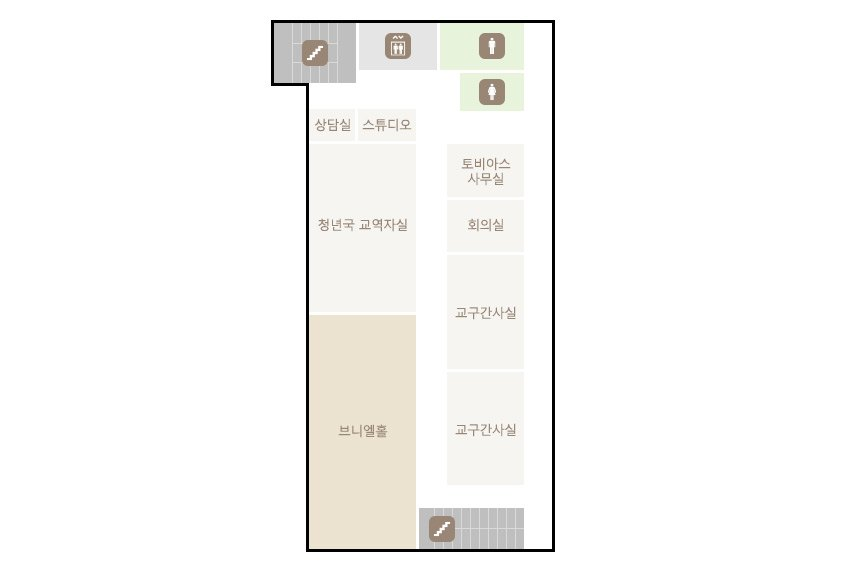
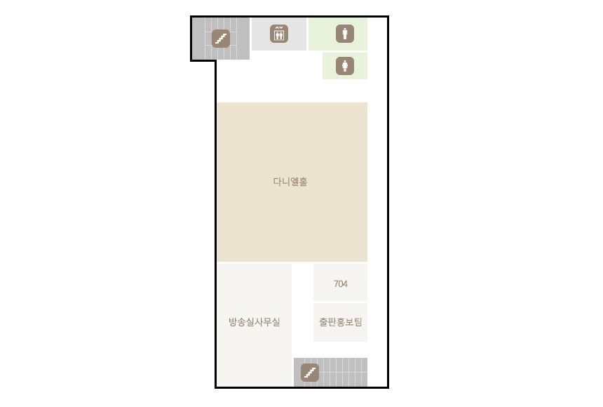
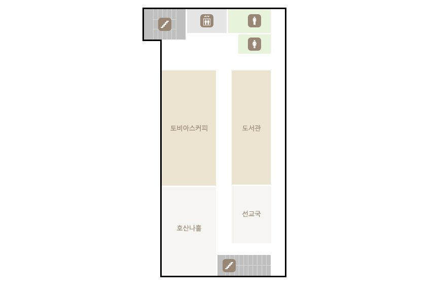
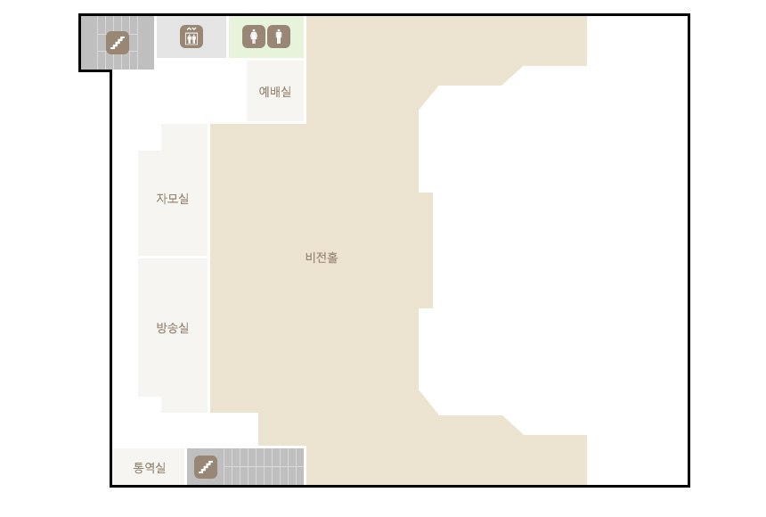
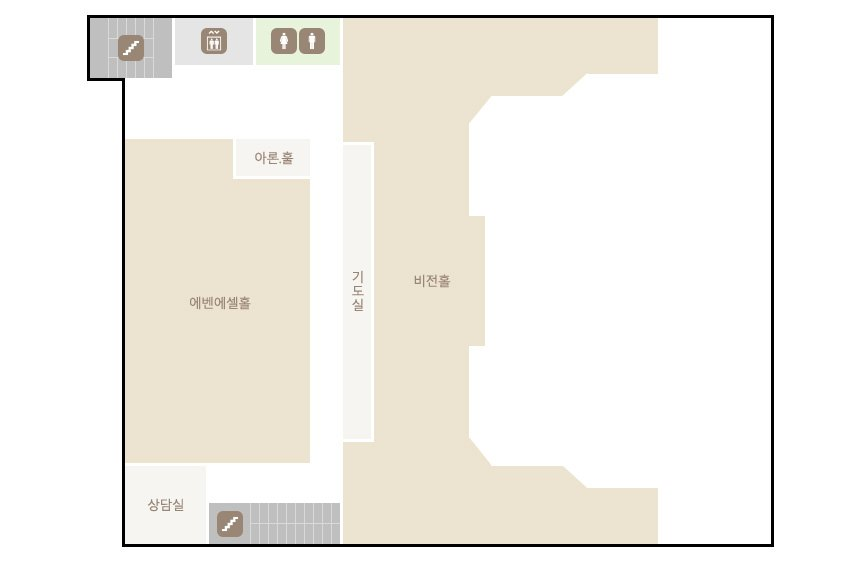
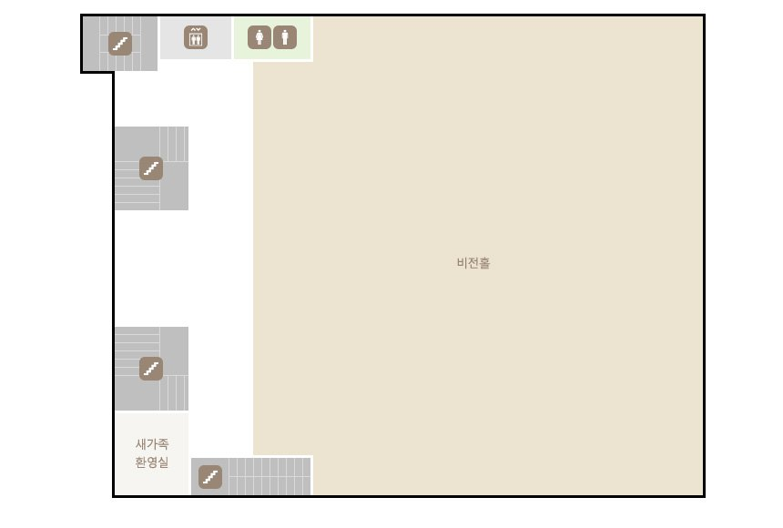
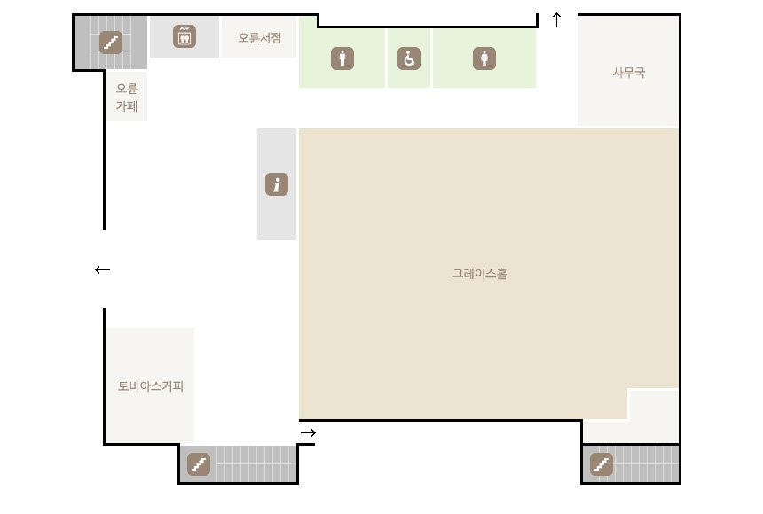
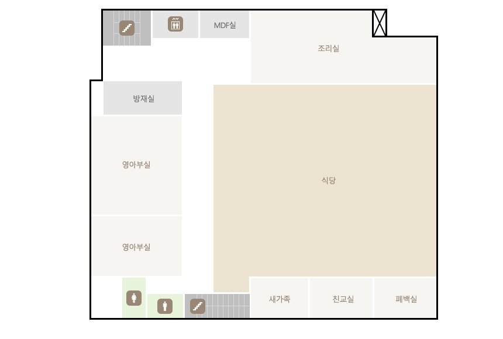
교회 안내 — 장소 안내
| 층 | 공간 |
|---|---|
| 6F | 다윗홀 · 방송실 · 다니엘 소그룹실 5, 6, 7, 8, 9 · 다니엘전도팀 |
| 5F | 이사야홀 · 여호수아홀 |
| 4F | 다니엘홀 · 방송실 |
| 3F | 다니엘홀/선교국/다니엘 소그룹실 4/다니엘기도회&프렌즈/사랑의헌금 |
| 2F | 다니엘홀 |
| 1F | 사무엘홀 · DLIGHT COFFEE · 방재실 |
| B1F | 주차장 · 다니엘 소그룹실 1, 2, 3 |
| B2F | 주차장 · 기계실 |
교회 안내 — 장소 안내
| 층 | 공간 |
|---|---|
| 6F | 꿈미학교 교실 |
| 5F | 디모데홀 |
| 4F | 바울홀 |
| 3F | 바나바홀 |
| 2F | 꿈미학교 교무실 · 교실 · 상담실 |
| 1F | 상상공작소 · 도서관 |
| B1 | 아뜰리에 · 식당 · 찬양연습실 /베드로홀 |
| B2 | 주차장 |
| B3 | 주차장 |
| B4 | 주차장 |
교회 안내 — 장소 안내
| 층 | 공간 |
|---|---|
| 5F | 꿈미학교(모임홀) 장애인화장실 |
| 4F | 꿈미학교(중등관) |
| 3F | 꿈미학교(중등관) |
| 2F | 꿈미학교 교실 |
| 1F | 오륜어린이집 |
| B1F | 엘리야홀 · 소그룹실 · 꿈미학교 과학관 |
| B2F | 스튜디오 |
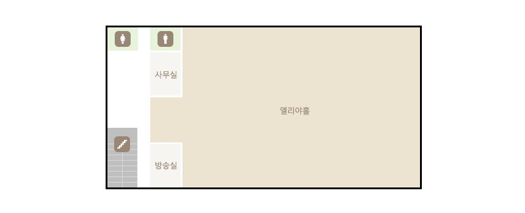
교회 안내 — 장소 안내
서울 강동구 강동대로 241 세기빌딩
| 층 | 공간 |
|---|---|
| 4F | 엘리사홀 · 회의실 |
| 3F | 교육국 · 꿈미출판 · (사)꿈미 |
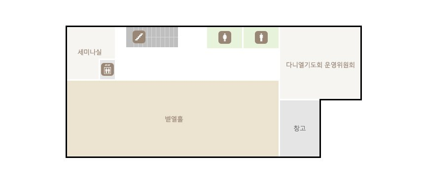
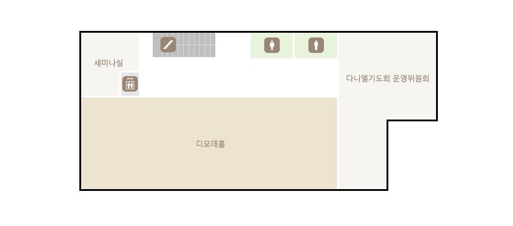
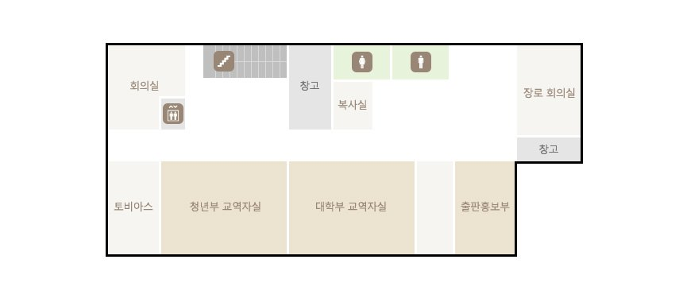
교회 안내 — 장소 안내
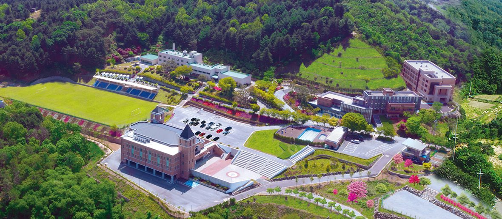
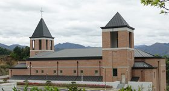
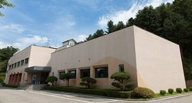
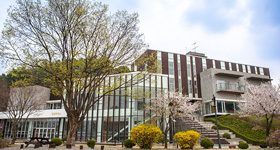
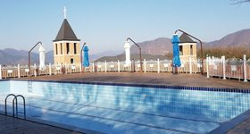
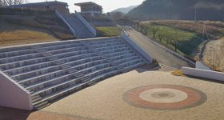
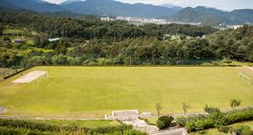
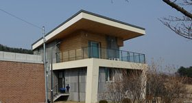
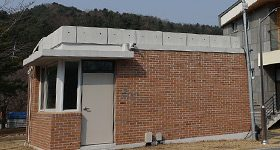
예배당 앞에 위치한 다목적광장
천연잔디구장 (712석)
게스트하우스
출입구/경비실
12422 경기도 가평군 가평읍 달전리 540-1 (호반로 2424-22)
전화 031-582-5111 · FAX 031-582-8113
교회 안내 — 장소 안내
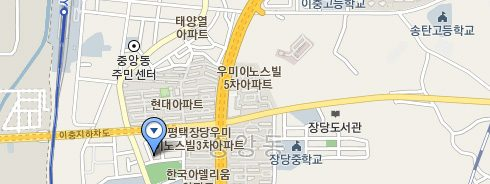
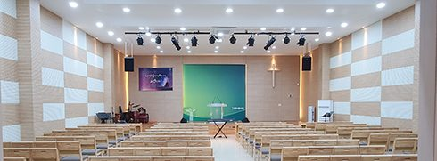
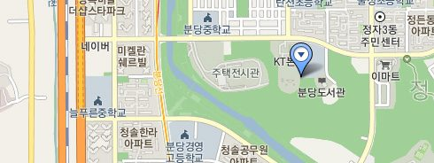
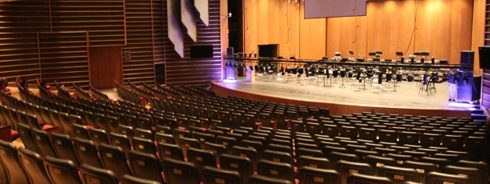
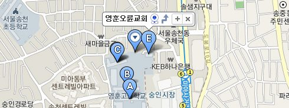
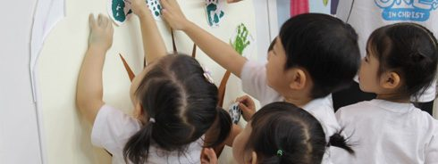
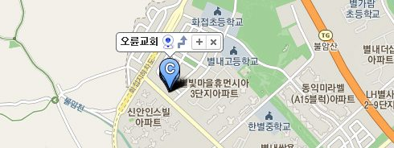
교회 안내 — 새가족 · 소그룹
오륜교회 “정식교인”이 되기 위한 “새가족교육”을 받으세요. 친절한 새가족리더와 함께 4번의 교육으로 교회와 복음, 실제적이고 구체적인 교회생활에 대해 자세한 설명을 들으실 수 있습니다. 오륜교회에 처음 오셨다면, 신앙생활을 오래하셨더라도 새가족교육을 통해 오륜교회에 빨리 익숙해지실 수 있습니다.
또한 다양한 궁금증들을 리더와 함께 풀어가실 수 있습니다.
1강 오륜교회 역사와 비전
2강 최고의 기적을 경험하라, 복음
3강 이 땅의 하나님 나라, 교회
4강 성도의 연합
새가족교육을 수료하셔야 “오륜교회 정식교인” 이 됩니다. 오륜교회 새가족교육 은 교회 정식주차증 발급과 사무국을 통해 발급되는 공식문서(기부금납입증명서, 교인증명서 등)를 위해 꼭 수료하셔야 합니다. 직분 임명(서리집사 이상)을 위한 필수조건이며, 필수양육과정(제자훈련, 사역훈련)을 위한 선수과정입니다.
| 장년부 새가족교육(그레이스 포함) | 청년부 새가족교육(쀼 포함) | ||
|---|---|---|---|
| 주일 오전 11:20~12:00 (3부 예배 후) |
주일 오후 1:20~2:00 (4부 예배 후) |
주일 오후 1:00 ~ 1:30 | |
| 5층 에덴홀, 에스라홀 | 3층 에벤에셀홀 | ||
새가족교육을 받으시는 시간동안 차량을 주차해두실 수 있는 곳으로 안내해드립니다. (등록 시 새가족패키지에 들어있습니다.) 새가족교육 수료 후에는 정식주차증이 발급됩니다.
교회 안내 — 새가족 · 소그룹
빠르게 변화하는 세상, 고립화가 갈수록 심해지는 환경 속에서 건강한 믿음을 지키려면 공동체 안에서 기쁨과 슬픔을 나누며 교제 가운데 힘을 받아야 합니다. 오륜교회는 성도님들 각자의 형편과 상황에 맞게 다양한 소그룹을 마련했습니다. 성도님들은 각자에게 가장 잘 맞는 소그룹에 속하여 건강한 교제를 나눌 수 있습니다.
소그룹의 리더(순장과 목장)는 오륜교회 소그룹에 잘 참석하고, 1년 이상 양육 훈련과
제자훈련, 사역훈련을 마친 분으로서 신앙과 성품을 잘 훈련받은 분들입니다.오륜교회를 더 알고 싶으시다면, 소그룹에 참여하십시오. 주일 예배는 충만하게 드렸지만 주중에 지치는 일상이 반복되시면, 소그룹 교제로 힘을 받으십시오. 성도는 혼자 있을 때 신앙이 자라지 않을 뿐 아니라 위험하기까지 합니다. 오륜교회 소그룹, 지금 신청하십시오.
| 여성순 | 남성순 | 직장순(여성 직장인) | 목장모임 |
|---|---|---|---|
| 주로 금요일 오전 | 각 순의 형편에 따라 | 각 순의 형편에 따라 | 주일 오후 / 목장별로 정한 시간 |
| 각 가정 / 교회 / 기타 장소 | 각 순의 형편에 따라 | 각 순의 형편에 따라 | 목장 부부의 가정 / 목장별로 정한 장소 |
교회 안내 — 양육훈련
우리가 다 하나님의 아들을 믿는 것과 아는 일에 하나가 되어 온전한 사람을 이루어 그리스도의 장성한 분량이 충만한 데까지 이르리니 (에베소서 4:13)
오륜교회 양육훈련 철학은 모든 성도들의 믿음이 그리스도의 장성한 분량까지 자라서, 세상 속에서 온전한 그리스도의 제자로 선한 영향력을 흘려보내도록 하는 것입니다.
“하나님은 당신을 있는 그대로 사랑하신다. 그러나 그대로 두시지는 않는다. 당신이 변화되기 원하신다“ - Max Lucado
교회 안내 — 양육훈련
교회는 상처받은 영혼들이 위로를 받고 치유를 받는 병원인 동시에 하나님의 군사로 훈련을 받는 훈련소이기도 합니다. 그리스도의 강한 군사로 세워지고, 주님을 닮은 참된 제자가 되어 이 시대에 영향력 있는 사람이 되기 위해서는 훈련과 교육이 필요합니다. 제자는 태어나는 것이 아니라 훈련으로 만들어지는 것입니다.
ㆍ소개와 배경
일대일제자양육이 오륜교회에 태동하기 시작한 것은 1996년입니다. 1997년 제 1기 12명의 지도자가 훈련을 받고, 그간 20년 동안 신청자는 해마다 증가하여 최근에는 연간 3-400명 정도가 동반자 과정을 신청하고 있습니다. 일대일제자양육은 단순한 성경공부가 아니며, 양육자와 동반자가 일대일로 만나 하나님의 말씀을 매개로 서로의 삶을 나누며, 성도의 관계를 맺도록 하고, 공동체 내에서 숨겨질 수 있는 개인의 문제들을 양육자의 헌신과 사랑을 통해 치유되고 회복할 수 있는 양육프로그램입니다.
ㆍ목적
이름뿐인 형식적인 그리스도인이 아니라, 신앙과 삶이 일치하는 참된 그리스도인을 길러내는 데 있으며, 자기중심적인 그리스도인이 아니라 예수 그리스도 중심의 그리스도인으로 세우는 데 있습니다. 양육자와 동반자가 16주 동안 만나면서 그리스도가 다스리는 삶이 무엇인가를 생활 속의 구체적인 체험을 통해 가르침을 받게 되며, 그 과정에서 참된 신앙이 체계화되고 영적인 멘토를 얻게 된다.
ㆍ장점과 특징
ㆍ소개와 배경
성경, 하나님의 말씀은 기독교 신앙의 핵심입니다. 하나님은 말씀을 통해 자신을 계시하셨고, 말씀을 이루어 가는 방식으로 일하고 계십니다. 그래서 하나님에 대해 가장 잘 알 수 있는 방법은 성경을 통해서입니다. 바이블 워크는 성도들이 성경을 더 가까이 할 수 있도록 돕는 과정으로 신구약 성경의 개관을 쉽게 다루고 있습니다. 제자훈련을 위한 선택과정으로 성경의 기초적인 이해와 뼈대를 마련하고자 하는 분들에게 유익합니다.
ㆍ목적
바이블워크는 성경의 전체적인 그림을 파악하도록 돕고 지리적, 역사적 배경을 이해하도록 합니다. 그리고 성경 각 권의 핵심적인 사실을 이해하도록 도우며 성경의 중요한 진리를 자신의 삶에 적용하도록 합니다.
ㆍ장점과 특징
ㆍ소개와 배경
베이직 워크는 영적 성장을 이룰 수 있는 핵심 내용을 다루면서 영적 성장의 기초를 다지도록 돕는 과정입니다. 기독교의 기본적인 진리를 배우며 실제의 삶 가운데 영적 성장의 구체적인 열매를 맺어갈 수 있도록 돕습니다. 제자훈련을 위한 선택과정으로 영적성장을 사모하게 하고 영적성장을 위한 로드맵을 제시하고 있습니다.
ㆍ목적
베이직 워크는 초신자들이 하나님을 경험하게 하고, 영적인 불균형에 빠진 사람들은 다시금 신앙의 중심을 잡을 수 있도록 돕습니다. 오랫동안 신앙생활을 하지 않았던 사람들에게는 다시금 복음의 기초를 잡을 수 있는 기회가 될 것입니다.
ㆍ장점과 특징
ㆍ소개와 배경
오륜교회는 성도들의 경건 생활을 위해 말씀 묵상집 주만나를 발간하여 매일의 삶을 하나님과 교제하도록 돕고 있습니다. 또한, 큐티의 이론과 실습에 대한 균형있는 훈련을 위해 입문반, 중급반, 고급반 3가지 과정의 세미나를 진행하고 있습니다. 중급과정에 해당하는 D형 큐티 세미나는 제자훈련을 받기 전 필수로 들어야 하는 5주 과정의 세미나입니다.
ㆍ목적
D형 큐티는 귀납적 성경묵상에 기초한 큐티 방법론입니다. 귀납적 성경묵상은 ‘왜?’라는 질문을 던지고 그 질문에 대한 답을 성경 보조자료에 근거하여 거룩한 영적 상상력을 발휘해서 도출하는 과정입니다. 성경 말씀을 보다 깊이 이해하고 탐구할 수 있는 자양분을 얻게 됩니다.
ㆍ장점과 특징
ㆍ소개와 배경
교리세우기는 그리스도인이 알아야 할 기본적인 영적 진리를 내 것으로 삼는 매우 중요한 과정으로, 오륜교회 등록교인으로 기독교의 기본적인 교리와 더 깊은 신앙훈련을 원하시는 분은 누구나 받을 수 있습니다. 이는 제자훈련을 위한 필수과정으로 체계적인 훈련을 원하시는 분들은 반드시 이수하셔야 하는 과정입니다.
ㆍ목적
교리세우기는 기독교 신앙과 삶에 대한 보편적이고 공통적인 질문에 포괄적인 해답을 제시하고 있습니다. 본 과정은 기독교의 핵심 진리를 집중적으로 다루면서 성경적인 세계관을 갖도록 돕고 있습니다.
ㆍ장점과 특징
ㆍ지원자격
ㆍ지원방법
ㆍ기타사항
서류지원 후 제자훈련담당 목회자들과 최종면접 후 합격자에 한해서 진행. 비용은 7만원.
ㆍ소개와 배경
XEE 전도훈련은 현대에 알맞게 복음을 관계 중심적으로 대화하며 전할 수 있도록 도와주는 프로그램입니다. 오륜교회 XEE 전도훈련은 목요팀과 토요팀으로 나누어 훈련을 진행하며 오륜교회에 등록하여 4주 새가족 교육을 수료한 청,장년은 누구나 신청할 수 있습니다.
ㆍ목적
성도가 이 땅에 살아가며 반드시 해야 할 일은 복음 증거입니다. 자신이 세워진 삶의 자리에서 예수님을 증거하는 것이 성도에게 주어진 본질적인 사명입니다. XEE 전도훈련은 이 사명을 삶의 현장에서 구체적으로 이루어 갈 수 있도록 돕습니다.
ㆍ장점과 특징
ㆍ소개와 배경
선교입문은 선교와 세계 복음화에 성경적ㆍ역사적ㆍ전략적ㆍ문화적ㆍ동역적인 눈을 뜨게 할 세계 선교의 기초를 쌓고, 한국선교역사 강의를 통해 선교적 삶의 터를 닦는 훈련으로 미션익스포져(Mission Exporsure) 교재를 가지고 오륜교회에서는 2009년 1기로 시작하여 현재 21기까지 1700여명이 수료하였습니다.
ㆍ목적
열방을 향한 아버지 하나님의 마음과 그 마음을 품고 지구촌 곳곳에서 섬기고 있는 선교사와 선교지를 이해하고 보내는 자로서의 사명을 깨닫고 부르심을 따라 다양한 모양과 역할로 세계 선교에 동참하도록 도전하고 동기를 부여한다.
ㆍ장점과 특징
ㆍ지원자격
ㆍ지원방법
ㆍ기타사항
서류지원 후 훈련담당 목회자들과 최종면접 후 합격자에 한해서 진행. 비용은 1만원.
ㆍ소개와 배경
오륜교회가 행복한 교회, 건강한 교회로 세워져 가는 밑거름에는 성도와 성도가 만나 복음의 영광과 기쁨을 나누는 일대일 사역이 있습니다. 일대일 양육자는 일대일 제자양육을 받고자 하여 신청한 동반자와 일대일로 매칭되어 동반자가 영적으로 성장할 수 있도록 말씀과 기도로 돕는 사역자입니다.
ㆍ일대일 지도자반 과정
오륜교회 일대일 양육자가 되기 위해서는 일대일 지도자반 과정을 반드시 수료해야 합니다. 일대일 지도자반은 매년 2회(상반기, 하반기) 개설되며 15주 동안 양육자가 되기 위한 기본적인 소양과 영적 훈련을 실시합니다. 성경암송, 성경일독, 큐티, 독후감, 교재나눔을 통해 일대일 사역을 감당할 수 있는 양육자로 훈련받게 됩니다.
ㆍ일대일지도자반 선행조건
ㆍ소개와 배경
큐티 리더스 과정은 개인 묵상을 넘어 가정, 직장, 공동체를 변화시키는 큐티 나눔에 대한 갈망에서 시작되었습니다. 큐티 스타트(초급)과 D형 큐티(중급) 과정을 마치고 난 이후에, 내가 속한 공동체에 큐티 나눔을 통한 변화를 효과적으로 모색하기 위한 큐티 고급과정입니다. 본 과정은 큐티 스태프, D형 큐티 수료자와 큐티 온라인 나눔방 리더들이 참여할 수 있습니다.
ㆍ목적
큐티 리더스 과정은 어떻게 하면 바쁜 현대인들이 큐티 나눔을 효과적으로 할 수 있는 지에 초점을 둡니다. 이를 위해 온라인 큐티나눔방(현재 약 60개, 약 600명 참여)을 운영하며 나눔방 리더들이 겪는 실제적인 고충을 함께 나누며 실전을 통해 큐티 나눔방을 이끌어 가는 실제적인 기술과 문제에 대한 대안을 얻을 수 있습니다.
ㆍ장점과 특징
News
종류를 고르고, 제목을 누르면 내용이 펼쳐집니다.
Messages & Videos
종류를 고르고, 제목을 누르면 그 자리에서 재생됩니다.
Live
주일 2부부터 6부까지, 예배 시간에 맞추어 방송됩니다.
방송 시간이 아니면 화면이 나오지 않습니다. 지난 예배는 설교 · 영상에서 보실 수 있습니다.
| 구분 | 시간 |
|---|---|
| 2부 | 08:00 |
| 3부 | 10:00 |
| 4부 | 12:00 |
| 5부 | 14:00 |
| 6부 | 16:00 |
01 — This Week
· 이번 주 오륜교회에서 있었던 예배와 사역입니다.
03 — Book a Space
예약을 받는 곳은 오륜교회 선교관입니다. 신청은 이메일을 통한 예약만 가능합니다.
오륜교회 선교국 02-6413-4809 · 이메일 oryunms@oryun.org
01 — Vision
오륜교회는 하나님의 임재가 가득한 예배 안에서 주님 오실 길을 준비합니다. 그 예배에서 받은 은혜로 사람을 세우고, 이웃을 섬기며, 다음 세대를 길러 내는 것이 우리의 꿈입니다.
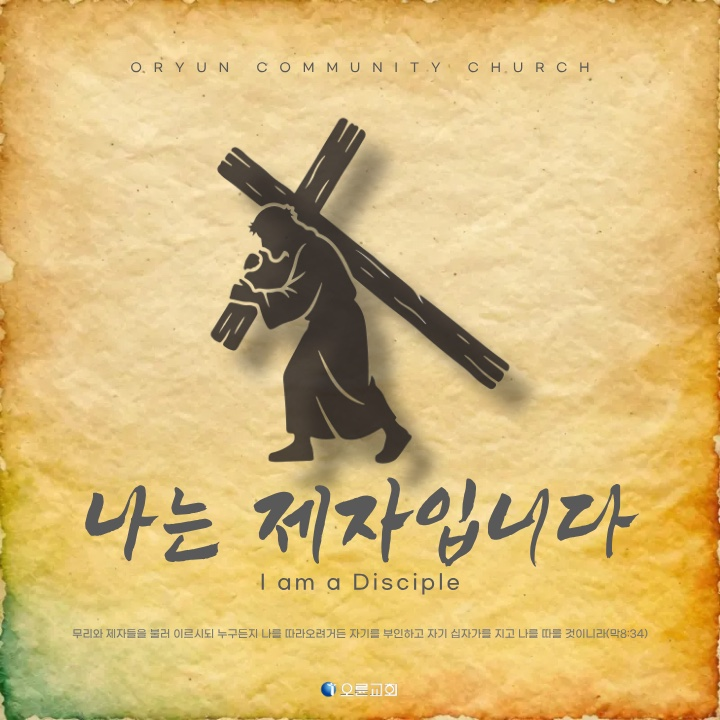
I am a Disciple
자기를 부인하고, 자기 십자가를 지고, 예수님을 따르는 사람. 2027년 오륜교회는 이 고백으로 한 해를 걷습니다.
마가복음 8:34
하나님의 임재가 충만한 예배로 주님 오실 길을 예비합니다.
가정과 일터, 세상 속에서 선한 영향력을 끼치는 사람을 세웁니다.
받은 사랑을 말에 그치지 않고 섬김과 나눔으로 실천합니다.
믿음을 이어 갈 다음 세대를 준비하고 함께 길러 냅니다.
예수 그리스도를 구세주로 믿고 성령의 인도를 받는, 구원받은 하나님의 백성입니다.
경배와 찬양을 드리고 말씀으로 양육받아 복음을 전하는 믿음의 공동체입니다.
지역사회와 세계 복음화를 위해 기도와 봉사로 참여하며 그리스도의 사랑을 실천합니다.
지역과 학원 선교로 참 제자를 삼고, 빛과 소금으로 하나님 나라를 넓혀 갑니다.
03 — Greeting
수풀이 우거져 길이 보이지 않는 곳도, 한 번도 걸어 보지 않은 인생의 길도 예수님과 함께 걸으면 길이 됩니다. 주경훈 담임목사가 오륜교회를 찾는 모든 분께 전하는 초대입니다.
험난한 수풀이 우거진 곳도 예수님과 함께하면 길이 됩니다.
한 번도 걷지 않은 우리의 인생도 주님과 동행할 때 길이 열립니다.
인생의 해답은 오직 예수님께 있습니다. 행복의 시작 예수 그리스도를 만나십시오. 복음의 능력을 경험할 때 하나님 나라를 누릴 수 있습니다.
인간의 대안이 아닌 하나님의 원안으로 돌아가는 교회. 말씀과 기도로 회복과 성장이 있는 교회. 꿈과 비전을 가지고 열방을 향해 나아가는 교회. 바로, 오륜교회입니다.
오륜공동체에서 하나님의 풍성한 은혜를 누리십시오. 하나님의 꿈을 꾸고, 하나님 나라를 세워가는 간증의 주인공 되시길 바랍니다.
담임목사 주경훈
사람이 만든 대안이 아니라 하나님이 처음 뜻하신 자리로 돌아가는 교회.
말씀과 기도로 무너진 삶이 회복되고 믿음이 자라는 교회.
꿈과 비전을 품고 온 세상을 향해 나아가는 교회.
06 — History
한 교회의 예배에서 시작된 기도가 한국교회 전체의 기도회로 자랐습니다. 네 곳의 교회를 분립 개척했고, 다음 세대를 위한 사역으로 걸음을 넓혀 왔습니다.
04 — People
교회를 세운 목회자와 그 걸음을 이어 가는 목회자, 그리고 각자의 자리에서 예배와 이웃을 섬기는 성도들이 오륜교회를 이룹니다.
2023년 12월 담임목사로 취임했습니다. 가정과 교회를 잇는 다음 세대 교육에 오래 힘써 왔으며 「원 포인트 통합교육」 등을 썼습니다.
오륜교회를 세우고 30여 년 목회했으며 2023년 설립목사로 추대되었습니다. 다니엘기도회 운영위원장, DNA Ministry 대표로 섬기고 있습니다.
| 이름 | 담당 | 전화 |
|---|---|---|
| 박상모 목사 | 목양국장 | 02-6413-7606 |
| 백상원 목사 | 교육국장 · 꿈미 소장 | 02-6413-4882 |
| 황성훈 목사 | 청년국장 · 신혼부부공동체 | 02-6413-4848 |
| 고일국 목사 | 선교국장 | 02-6413-4808 |
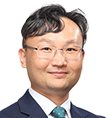 정능고 목사 | DNA 총괄디렉터 · 다니엘기도회 총괄디렉터 | 02-6413-4802 |
| 양명환 목사 | 교구선임 · 가락교구 · 출판홍보부 | 02-6413-4829 |
| 김득수 목사 | 강북교구 | 02-6413-4827 |
| 김민섭 목사 | 청년2부 | 02-6413-4837 |
| 김민우 목사 | 영어예배부 | 02-6413-4892 |
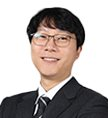 김보광 목사 | 광진교구 · 다니엘기도회 | 02-6413-4826 |
| 김성현 목사 | 중등2ㆍ3학년부 | 02-6413-4880 |
| 김영글 목사 | 방송 본부장 · 블레싱워십 · 찬양사역부 총괄 | 02-6413-4804 |
| 김영채 목사 | 그레이스공동체 · DNA Ministry | 02-6413-4803 |
| 김용주 목사 | 초등1학년부 | 02-6413-4876 |
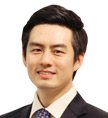 김장현 목사 | 청년10부 · 청년국 훈련부 | 02-6413-4845 |
| 김창석 목사 | 경기북교구 · 다니엘기도회 | 02-6413-4911 |
| 김홍준 목사 | 선교지원 | 02-6413-4897 |
| 노대현 목사 | 국내선교부 · 국제사역부 · 오륜국제한가족센터 | 02-6413-4889 |
| 노승완 목사 | 거여마천위례교구 · 새가족부 | 02-6413-4818 |
| 문종현 목사 | 성내2교구 | 02-6413-4821 |
| 방석일 목사 | 목양실 · 8시 초등부 | 02-6413-7607 |
| 방성율 목사 | 잠실교구 · 예배부 | 02-6413-4833 |
| 배요한 목사 | 풍납교구 · 양육훈련부 1부 | 02-6413-4823 |
| 변상선 목사 | 중등1학년부 | 02-6413-4886 |
| 송성국 목사 | 하남교구 · 새생명축제 | 02-6413-4867 |
| 송시언 목사 | 영아부 | 02-6413-4870 |
| 송영광 목사 | 강남교구 · 예배부 | 02-6413-4834 |
| 송정용 목사 | 강동3교구 | 02-6413-4822 |
| 요하네스 호기 하르디안트 목사 | 인도네시아어예배부 | |
| 우미쉘 목사 | 찬양사역부 · 프레전스 | |
| 유성식 목사 | 헤세드 · 청년8부 | 02-6413-4838 |
| 이갈렙 목사 | 청년7부 · 청년국 선교부 | 02-6413-4843 |
| 이병민 목사 | 강동1교구 · 주만나 | 02-6413-4835 |
| 이성민 목사 | 오금교구 · 복지부 | 02-6413-4832 |
| 이성현 목사 | 초등5학년부 | 02-6413-4877 |
| 이정재 목사 | 북한선교부 | 02-6413-4891 |
| 이준건 목사 | 청년4부 | 02-6413-4839 |
| 이탁열 목사 | 청년3부 | 02-6413-4838 |
| 임예훈 목사 | 브릿지워십 · 초등6학년부 | 02-6413-4878 |
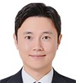 임지훈 목사 | ||
| 장두희 목사 | 청년9부 · Remnant Creative | 02-6413-4836 |
| 장명근 목사 | 청년6부 | 02-6413-4841 |
| 장원석 목사 | 올림픽교구 · 양육훈련부 | 02-6413-4828 |
| 정광식 목사 | 파크리오교구 · 다니엘기도회 | 02-6413-4824 |
| 정직한 목사 | 청년5부 · 청년국 훈련부 | 02-6413-4844 |
| 정태훈 목사 | 경기남교구 · 문화사역부 | 02-6413-4831 |
| 정현욱 목사 | 성내1교구 · 전문인선교부 | 02-6413-4820 |
| 정형근 목사 | 초등3학년부 | 02-6413-4874 |
| 조인 목사 | 회복사역부 · 포레온교구 | 02-6413-4907 |
| 조형래 목사 | 방이교구 | 02-6413-4819 |
| 주현우 목사 | 청년1부 · 청년국 훈련부 | 02-6413-4839 |
| 최민흥 목사 | 강동2교구 · 전도부1 | 02-6413-4825 |
| 최병주 목사 | 고등부 | 02-6413-1765 |
| 최상문 목사 | 유치부 | 02-6413-4872 |
| 최주영 목사 | 청년11부 · 청년국 양육부 | 02-6413-4847 |
| 하은준 목사 | 초등4학년부 | 02-6413-8772 |
| 휜티탄튀 목사 | 베트남어예배부 · 베트남어이중언어학교 | 02-6413-4894 |
| 김철호 목사 | 담임 · 송탄오륜교회 | 031-665-0675 |
| 주성하 목사 | 담임 | |
| 김효태 목사 | 센터장 · 오륜비전빌리지 | 031-582-5111 |
| 김선민 목사 | 아산병원원목 | 02-3010-7877 |
| 이름 | 담당 | 전화 |
|---|---|---|
| 우경규 강도사 | 초등2학년부 | 02-6413-4884 |
| 이름 | 담당 | 전화 |
|---|---|---|
| 김미영 전도사 | 사랑부 | 02-6413-4879 |
| 김시온 전도사 | ||
| 노세 사토시 전도사 | 일본어예배부 | 02-6413-4890 |
| 심재영 전도사 | 목양실 · 목양비서 | 02-6413-4799 |
| 애르나자르 전도사 | ||
| 이아현 전도사 | 유아부 | 02-6413-4881 |
| 이종회 전도사 | 에클레시아 · 하이프레이즈 | 02-6413-4917 |
| 장권오 전도사 | ||
| 조동혁 전도사 | ||
| 진상윤 전도사 | 중국어예배부 | 02-6413-4895 |
| 최규민 전도사 |
| 이름 | 담당 | 전화 |
|---|---|---|
| 권경현 협동목사 | ||
| 윤재중 협동목사 | 02-6413-4927 | |
| 조용진 협동목사 |
02 — Worship
주일에는 새벽부터 저녁까지 일곱 번의 예배가 있습니다. 편한 시간에 오셔서 함께 예배하세요. 처음 오셨다면 2층 새가족 등록처에서 도와드립니다.
| 구분 | 시간 | 장소 |
|---|---|---|
| 1부 | 06:00 | 본관 1층 그레이스홀 |
| 2부 | 08:00 | 본관 2층 비전홀 |
| 3부 | 10:00 | 본관 2층 비전홀 · 영어 통역 |
| 4부 | 12:00 | 본관 2층 비전홀 · 영어·중국어 통역 |
| 5부 | 14:00 | 본관 2층 비전홀 · 청년국 주일예배 |
| 6부 | 16:00 | 본관 2층 비전홀 |
| 7부 | 20:00 | 본관 1층 그레이스홀 · 영상예배 |
| 구분 | 시간 | 장소 |
|---|---|---|
| 새벽 1부 | 05:00 | 월~토 · 1층 그레이스홀 |
| 새벽 2부 | 06:00 | 월~토 · 2층 비전홀 |
| 9시 기도회 | 09:00 | 월~금 · 3층 에벤에셀홀 |
| 수요 오전예배 | 11:00 | 수요일 · 2층 비전홀 |
| 수요 오후예배 | 19:30 | 수요일 · 2층 비전홀 |
| 금요기도회 | 20:30 | 금요일 · 2층 비전홀 |
| 구분 | 시간 | 장소 |
|---|---|---|
| 영아부 (0~3세) | 9:30 · 11:30 | ODC 1층 사무엘홀 |
| 유아부 (4~5세) | 10:00 · 12:00 | 제1교육관 3층 바나바홀 |
| 유치부 (6~7세) | 10:00 · 12:00 | 제1교육관 지하 1층 베드로홀 |
| 8시 초등부 | 8:00 | ODC 5층 여호수아홀 |
| 초등 1학년 | 10:00 · 12:00 | 제1교육관 5층 디모데홀 |
| 초등 2학년 | 10:00 · 12:00 | 제1교육관 4층 바울홀 |
| 초등 3학년 | 10:00 · 12:00 | ODC 5층 여호수아홀 |
| 초등 4학년 | 10:00 · 12:00 | ODC 6층 다윗홀 |
| 초등 5학년 | 10:00 · 12:00 | 본관 7층 벧엘홀 |
| 초등 6학년 | 10:00 · 12:00 | 제3교육관 4층 엘리사홀 |
| 8시 중고등부 | 8:00 | ODC 6층 다윗홀 |
| 중등 1학년 | 10:00 · 12:00 | 제2교육관 지하 1층 엘리야홀 |
| 중등 2·3학년 | 10:00 · 12:00 | ODC 5층 이사야홀 |
| 고등부 | 10:00 · 12:00 | 본관 10층 체육관 |
| 사랑부 (어린이) | 10:00 | 제1교육관 1층 도서관 |
| 사랑부 (청소년·성인) | 12:00 | 제1교육관 1층 도서관 |
| 구분 | 시간 | 장소 |
|---|---|---|
| 수험생부 (엘피스) | 오전 8:00 | 본관 5층 브니엘홀 |
| 청년1부 | 오후 3:45 | 제1교육관 지하 1층 베드로홀 |
| 청년2부 | 오후 3:45 | 제1교육관 3층 바나바홀 |
| 청년3부 | 오후 3:45 | 제1교육관 4층 바울홀 |
| 청년4부 | 오후 3:45 | 제1교육관 5층 디모데홀 |
| 청년5부 | 오후 3:45 | 본관 10층 체육관 |
| 청년6부 | 오후 3:45 | 본관 3층 에벤에셀홀 |
| 청년7부 | 오후 3:45 | ODC 6층 다윗홀 |
| 청년8부 | 오후 3:45 | 본관 7층 벧엘홀 |
| 청년9부 | 오후 3:45 | ODC 5층 여호수아홀 |
| 청년10부 | 오후 3:45 | 제2교육관 지하 1층 |
| 청년11부 | 오후 3:45 | ODC 5층 이사야홀 |
| 그레이스1부 | 오후 3:45 | 본관 5층 에덴홀 |
| 그레이스공동체 | 오후 1:30 | ODC 6층 다윗홀 |
| 신혼부부 (쀼) | 오후 3:45 | 본관 1층 그레이스홀 |
| 구분 | 시간 | 장소 |
|---|---|---|
| 영어 | 오후 2:00 | 제1교육관 4층 바울홀 |
| 중국어 | 오후 2:00 | 본관 7층 벧엘홀 |
| 일본어 | 오후 2:00 | 제1교육관 3층 바나바홀 |
| 인도네시아어 | 오후 2:00 | 오륜레인보우 지역아동센터 |
| 러시아어 | 오후 2:00 | 오륜국제한가족센터 |
| 베트남어 | 오전 11:30 | 오륜국제한가족센터 |
주일 2~6부 예배 전후에 비전센터 2층으로 오시면 됩니다.
등록 카드를 쓰고 담임목사님과 사진을 찍은 뒤, 교구와 부서 사역자를 소개받습니다.
새가족부로 전화 주시면 안내해 드립니다.
05 — Visit Us
올림픽공원 북쪽, 강동대로변에 있습니다. 주일에는 주차 공간이 넉넉하지 않아 지하철과 버스를 권해 드립니다.
서울 강동구 강동대로 235
(성내동 449-7) 우편번호 05408 · TEL 02-485-4004
| 역 · 출구 | 도보 / 버스 | 안내 |
|---|---|---|
| 59올림픽공원역 1번 | 버스 약 1분 | 3319, 3220 → ‘오륜교회앞’ 하차 |
| 5둔촌동역 4번 | 버스 약 3분 | 3412, 3413, 3214, 3316 → ‘둔촌오륜역’ 하차 후 약 200m |
| 9둔촌오륜역 1번 | 도보 약 9분 | 둔촌사거리 방향으로 약 650m 직진 |
| 5둔촌동역 3번 | 도보 약 10분 | 둔촌사거리 방향 약 550m 직진 후 우회전 |
| 5올림픽공원역 3번 | 도보 약 12분 | 둔촌사거리 방향 약 750m 직진 후 좌회전 |
| 2잠실역 1·7번 | 버스 이용 | 3413, 3412, 30-5 → ‘보성중고등학교’ 하차 후 도보 약 6분 |
| 8몽촌토성역 2번 | 버스 이용 | 30-5, 3412, 3413 → ‘보성중고등학교’ 하차 후 도보 약 6분 |
본관 지하·옥외·제1교육관 주차장은 주일용 주차 스티커가 있는 차량만 들어갈 수 있고, 2시간 이내로 이용합니다. 노약자·장애인·3인 이상 가족 차량은 확인 후 입차할 수 있습니다.
주일 오전 7:30~오후 6:00. 중앙 주차장과 주차동 1·2층을 이용하고, 셔틀버스에서 2시간 30분 할인권을 받습니다.
동북고 운동장은 주일 오전 7:30~오후 6:00 셔틀버스를 운영합니다. 한국체대 정문 주차장은 2시간 할인권을 이용합니다.
주일용 주차 스티커는 새가족 교육을 마친 뒤 1층 사무국에서 받습니다. 6km 이상 떨어진 곳에 사는 성도가 대상이고(송파·강동·광진구 제외) 한 가정에 한 대입니다. 신분증, 차량등록증, 주민등록등본을 가져오세요.
주일·수요·금요·새벽예배와 송구영신예배, 다니엘기도회에 차량을 운행합니다.
예배 차량 시간표 →